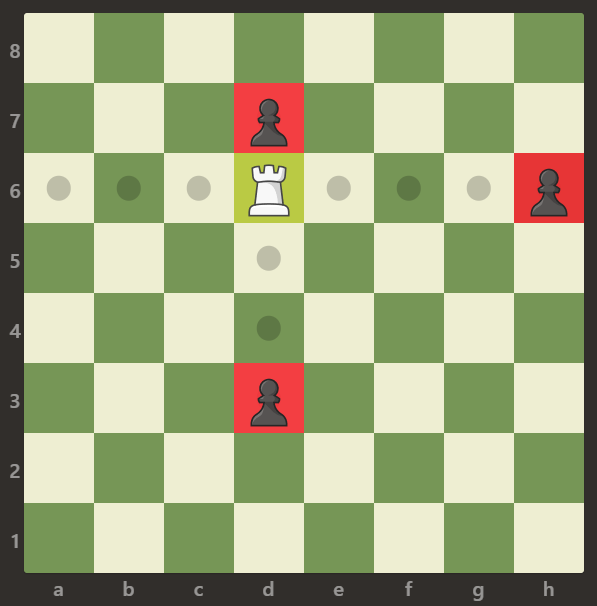
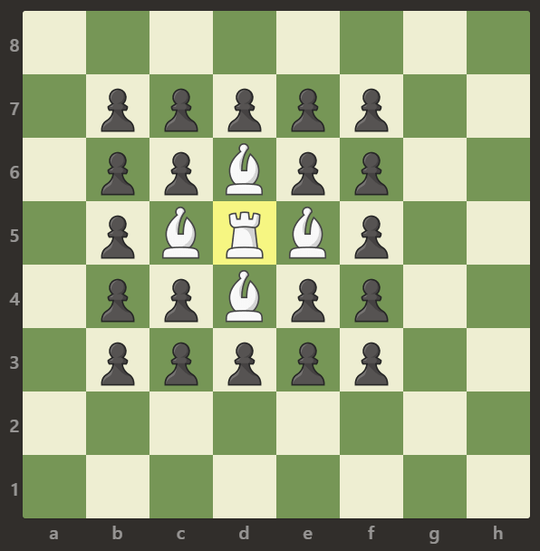

999. 可以被一步捕获的棋子数
找到白车，向四个方向逐格扫描：空格继续走，第一个棋子是黑卒计 1，遇到象或出界就停。
思路
- 车吃卒只沿上下左右直线，且第一个遇到的棋子才可能被吃，后面全被挡住。
- 每个方向逐格走：
.继续；p计 1 并停；B或出界停。 - 棋盘固定 8×8、只有一个车，答案最多 4，直接模拟即可。
图解
最优解
1class Solution {2 public int numRookCaptures(char[][] board) {3 int ans = 0;4 // 找到白车，向四个方向逐格扫5 for (int i = 0; i < 8; i++) {6 for (int j = 0; j < 8; j++) {7 if (board[i][j] != 'R') continue;8 ans += capture(board, i, j, -1, 0) + capture(board, i, j, 1, 0)9 + capture(board, i, j, 0, -1) + capture(board, i, j, 0, 1);10 }11 }12 return ans;13 }14 15 // 沿 (dx,dy) 逐格走：空格继续，第一个棋子是黑卒就吃掉，否则被挡住16 private int capture(char[][] board, int i, int j, int dx, int dy) {17 for (i += dx, j += dy; i >= 0 && i < 8 && j >= 0 && j < 8; i += dx, j += dy) {18 if (board[i][j] == 'p') return 1;19 if (board[i][j] != '.') return 0;20 }21 return 0;22 }23}题目
给定一个 8 x 8 的棋盘，只有一个 白色的车，用字符 'R' 表示。棋盘上还可能存在白色的象 'B' 以及黑色的卒 'p'。空方块用字符 '.' 表示。
车可以按水平或竖直方向（上，下，左，右）移动任意个方格直到它遇到另一个棋子或棋盘的边界。如果它能够在一次移动中移动到棋子的方格，则能够 吃掉 棋子。
注意：车不能穿过其它棋子，比如象和卒。这意味着如果有其它棋子挡住了路径，车就不能够吃掉棋子。
返回白车 攻击 范围内 兵的数量。
示例 1：

输入：[[".",".",".",".",".",".",".","."],[".",".",".","p",".",".",".","."],[".",".",".","R",".",".",".","p"],[".",".",".",".",".",".",".","."],[".",".",".",".",".",".",".","."],[".",".",".","p",".",".",".","."],[".",".",".",".",".",".",".","."],[".",".",".",".",".",".",".","."]] 输出：3 解释： 在本例中，车能够吃掉所有的卒。
示例 2：

输入：[[".",".",".",".",".",".",".","."],[".","p","p","p","p","p",".","."],[".","p","p","B","p","p",".","."],[".","p","B","R","B","p",".","."],[".","p","p","B","p","p",".","."],[".","p","p","p","p","p",".","."],[".",".",".",".",".",".",".","."],[".",".",".",".",".",".",".","."]] 输出：0 解释： 象阻止了车吃掉任何卒。
示例 3：

输入：[[".",".",".",".",".",".",".","."],[".",".",".","p",".",".",".","."],[".",".",".","p",".",".",".","."],["p","p",".","R",".","p","B","."],[".",".",".",".",".",".",".","."],[".",".",".","B",".",".",".","."],[".",".",".","p",".",".",".","."],[".",".",".",".",".",".",".","."]] 输出：3 解释： 车可以吃掉位置 b5，d6 和 f5 的卒。
提示：
board.length == 8board[i].length == 8board[i][j]可以是'R'，'.'，'B'或'p'- 只有一个格子上存在
board[i][j] == 'R'
题面取自力扣当前版本。
数据快照 2026-11-04。题面版权归力扣所有，本站点仅供本人学习使用，请勿对外发布。